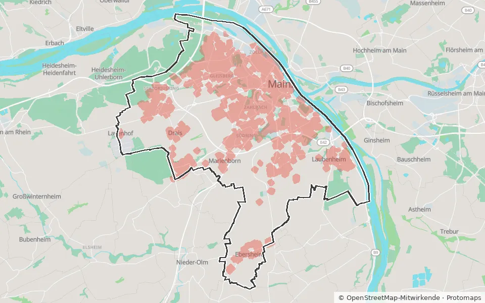
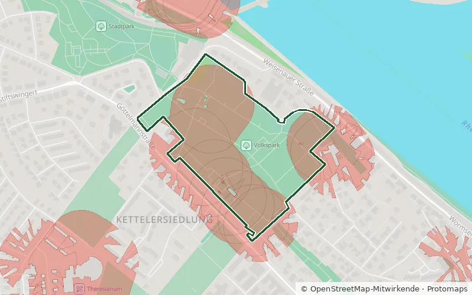
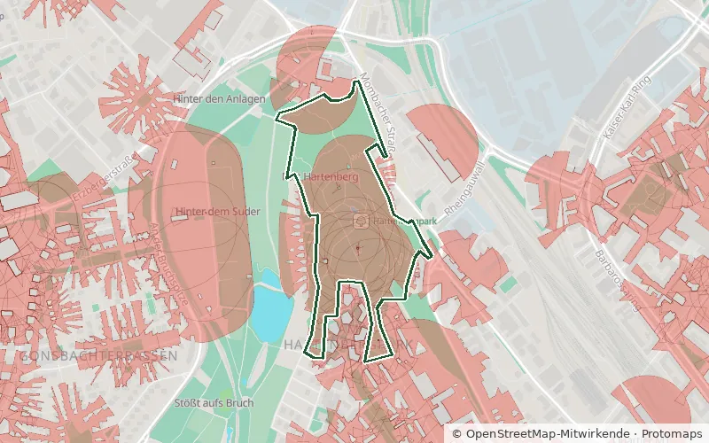
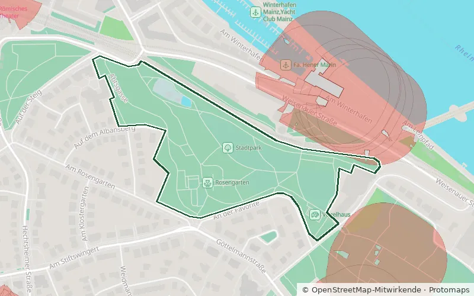
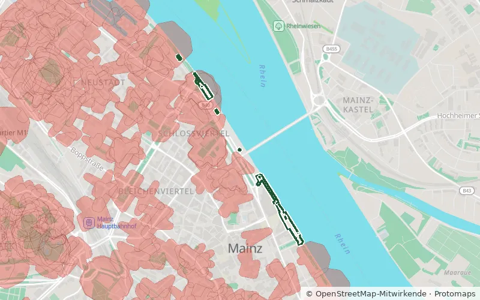
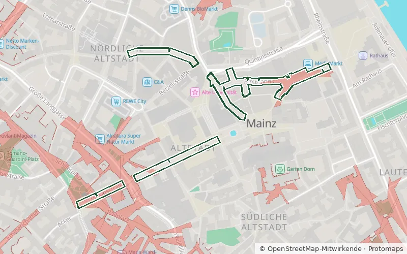
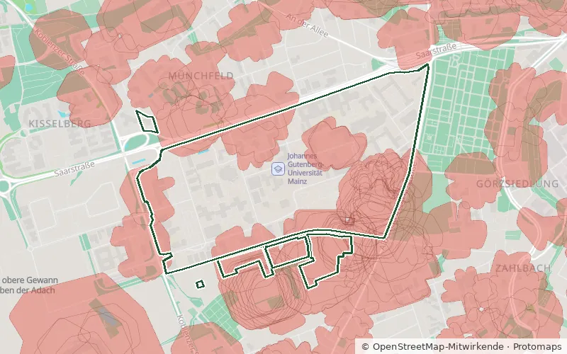

In Mainz ist öffentliches Kiffen auf 16 km² verboten, das sind 16,2 % der Stadtfläche von 98 km². Grund sind 1 096 Einrichtungen wie Schulen und Spielplätze: In ihrer Sichtweite, bis 100 Meter vom Eingang und ohne Gebäude dazwischen, verbietet § 5 KCanG den Konsum. Dazu kommen die Fußgängerzonen von 7 bis 20 Uhr und überall die Gegenwart von Minderjährigen.
Wald gibt es in Mainz kaum (5 % der Stadtfläche, vor allem der Lennebergwald), dafür auf wenig Fläche 405 Spielplätze, fast so viele wie Sportstätten.

Woher die Zonen in Mainz kommen
| Einrichtung | Anzahl | Zonenfläche |
|---|---|---|
| Schulen | 65 | 2,8 km² |
| Kitas und Kindergärten | 106 | 2,7 km² |
| Kindertagespflege | 8 | 0,1 km² |
| Spielplätze | 405 | 6,6 km² |
| Kinder- und Jugendeinrichtungen | 23 | 0,5 km² |
| Sportstätten | 489 | 8,0 km² |
Jede Art für sich gezählt, Überlappungen also mehrfach. Anbauvereinigungen nur, soweit in OpenStreetMap eingetragen.
Die meisten Zonen gehen auf die 489 Sportstätten zurück, danach auf die 405 Spielplätze. Auf Spiel- und Bolzplätzen verbietet die Grünanlagensatzung der Stadt außerdem das Rauchen, bis zu 5.000 Euro (Grünanlagensatzung).
Volkspark, Stadtpark und Rheinufer
Im Volkspark liegen 72 % der Fläche in einer Zone: Fünf Sportanlagen und zwei Spielplätze liegen im Park. Im Hartenbergpark sind es 82 %, mit neun Spielplätzen.


Der Stadtpark dagegen liegt fast außerhalb jeder Zone (1 %). Am Rheinufer liegen vom Adenauer-Ufer 26 % in einer Zone, vom Winterhafen 17 %; auf einem 100 Meter breiten Streifen Land entlang des Rheins sind es 11 %.


Innenstadt
Eine Liste der Mainzer Fußgängerzonen hat die Stadt nicht veröffentlicht; sie widmet Straßen einzeln als Fußgängerzone, etwa 2017 einen Teil der Augustinerstraße (Amtsblatt 2017). Dort gilt von 7 bis 20 Uhr Konsumverbot; blau sind die Fußgängerbereiche aus OpenStreetMap, und das ist mehr als die belegten Fußgängerzonen.
Von Schusterstraße, Stadthausstraße, Ludwigsstraße und Am Brand liegen 28 % in einer Sichtweiten-Zone, von der Augustinerstraße 15 %. Markt (2 %), Gutenbergplatz (0 %) und Liebfrauenplatz (0 %) liegen außerhalb der Zonen.

Universität, Stadion und Fastnacht
Hochschulen sind nach § 5 KCanG keine Verbotsorte. Auf dem Campus der Johannes Gutenberg-Universität liegen 31 % in einer Zone, um 37 Sportanlagen und zwei Kitas. In der MEWA ARENA verbietet die Stadionordnung, Cannabis mitzubringen und zu konsumieren (Stadionordnung).

Für Fastnacht und Rosenmontagszug haben wir keine eigene Regel der Stadt zu Cannabis gefunden; dort sind überall Kinder, und in ihrer Gegenwart gilt das Verbot ohnehin.
Was sonst noch in Mainz gilt
Rheinland-Pfalz hat feste Bußgelder: Konsum in einer Verbotszone, auch in der Fußgängerzone, kostet 400 Euro, in Gegenwart von Kindern und Jugendlichen 1.000 Euro (Bußgeldkatalog Rheinland-Pfalz); zuständig ist die Stadt. Ein Rauchverbot im Freien, etwa an Haltestellen und auf Spielplätzen, plant das Land; beschlossen ist es noch nicht. Eigene Verbotszonen für Cannabis hat Mainz nicht (Stand 27. November 2026).
Häufige Fragen zu Mainz
Wo darf man in Mainz kiffen?
Nach § 5 KCanG außerhalb der roten Flächen, etwa im Stadtpark (1 % in einer Zone) und im Lennebergwald (7 %). Tagsüber nicht in den Fußgängerzonen der Altstadt, nie in Gegenwart von Minderjährigen und nicht gegen ein Hausrecht. Weiß heißt nicht sicher erlaubt: Hecken, Bäume und fehlende Einrichtungen kennt die Karte nicht.
Wie genau ist das?
Täglich aus OpenStreetMap gerechnet, mit Gebäuden als Sichthindernis; die Zahlen hier sind vom 27. November 2026. Eine Orientierungshilfe, keine Rechtsauskunft (wie gerechnet wird).
Fehlt eine Einrichtung? Korrekturen in OpenStreetMap stehen am Tag darauf auf der Karte; bitte nur eintragen, was es vor Ort gibt.